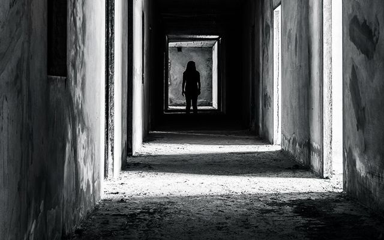

- Back
- Funny
- Home
Marinduque
Gusto ko lang ishare yung experience ko sa province namin. i'm not from feu pero sana mapost kasi avid reader din ako dito. Bata pa lang ako, masabuhin nako. yung mga karanasan mo pwede na maging movie. buti nalang sanay nako at matatag ako sguro kasi kung sa iba nangyayari yung karanasan ko. baka magpakamatay na sa sobrang baliw smile emoticon hindi naman nabubuksan at naisasara ang 3rd eye. blessed ka nalang pag binigyan ka ni God ng kakayahan makakita ng mga di nakikita ng normal na mata. at hindi porket nakakita ka may 3rd eye ka. choice yun ng spirit kung ginusto niya magpakita. kwento yun sakin ng lolo ko. lolo kong matagal nang patay. pero kahit patay na siya nakakausap ko parin siya. pero sabi sakin ni lolo na hindi lahat ng spirit na nakikita mo mabait. at yung iba may kakayahang pumatay. pero yung mga ganun daw hindi na spirit. demonyo na daw yun. So ito na nga mga kwento ko, Marinduque, yun yung province namin kung saan dun ako lagi nakakakita. pero dito naman sa laguna meron din pero di kising dami sa marinduque. Meron dung bahay na walang makadaang hayop pero nadadaanan ng tao, nung sumakay nga kami sa kalesa? di dumaan yung kabayo talagang huminto siya at kahit anong palo sa pwet ng kabayo di siya nadaan. kahit aso mapapusa o ibon hindi. di ko alam kung bakit. simula nun nagtaka nako sa bahay na yun. Naglaro kame ng usa-usahan( parang bangsack) ng mga kalaro ko. at naisip ko yung bahay. pero bago ako pumasok dun tiningnan ko muna sa labas yung buong bahay. sa bintana sa taas may nakita akong batang babaeng may hawak ng manika na parang nasunog ang mukha. pinasok ko pero di sa mismong bahay dun ako nagtago. sa gilid ng bahay. ng biglang may sumitsit sakin paglingon ko nasa gilid ko na yung batang nakita ko sa bintana. tumingin siya sakin at sinabing "laro tayo" pero di ako sumigaw o tumakbo kahit alam kong nakakatakot siya. nakipaglaro talaga ako. tinanong ko siya " anong nangyari sayo bakit andami mong paso?" ngumiti siya at naging maayos siya nawala yung nga sunog niya sa mukha " "halika may ipapakita ko sayo" pagpasok namin sa bahay may halong kaba pero di ako natatakot (pag kwinekwento ko to sa iba sinasabing ang tapang ko naman pero alam ko kasi na hindi naman sila nananakit). so ayun na nga. sobrang ganda sa loob akala mong mansyon. sa london mga ganun. hanggang sa may nakita akong nakain sa mesa. marami silang naguusap usap. yun daw ang mama at mga kapatid niya. umupo ako sa sofa. kasama at hawak ko yung bata. ng biglang may dumating na lalaki at sinabing "at yan naman ang ama ko" *pagalit* humigpit hawak niya sa kamay ko. at nakita kong binubugbog sila. tapos nakita kong pinapahirapan sila ng tatay niya. hanggang sa balak nila layasan yung tatay nila kaso nahuli sila kaya kinulong lahat sila sa isang kwarto. at umalis ang tatay. ng may naiwan na kandila sa may lamesa at dun nagsimula yung sunog. kitang kita ko kung pano sila nahirapan sa loob ng kwarto. napatayo ako at sinabi kong "tulungan natin! " pagtingin ko manika nalang hawak ko. at yung mansyon naging lote, yung sofa naging malaking troso. at binuksan ko yung kwarto kung san dun sila kinulong. nilapitan ko. tinanggal ko yung lock gamit yung bato. pagbukas ko andaming uod at buto ng tao. lumabas ako sa bahay. nagsabi ako sa baranggay. pinakiusapan ko si mama na sabihin dun. diko na alam ang nangyari sa mga buto kasi grade5 palang ako nun. after ilang weeks nakita ko ulit yung bata sa kwarto ko. nagpapasalamat. aakyat na daw sila.